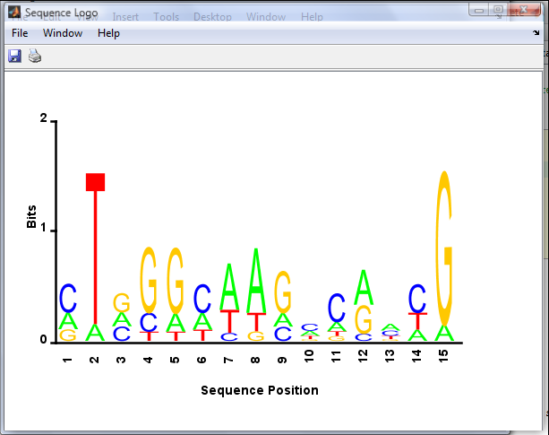

DNA Sequence Demo
seed = 0; rand('state', seed); randn('state', seed);
Nseq = 10;
Nlocn = 15;
Nletters = 4;
Nmix = 4;
pfg = 0.30;
mixweights = [pfg/Nmix*ones(1,Nmix) 1-pfg];
z = sampleDiscrete(mixweights, 1, Nlocn);
alphas = 1*ones(Nletters,Nmix);
for i=1:Nmix
alphas(i,i) = 20;
end
alphas(:,Nmix+1) = ones(Nletters, 1);
theta = zeros(Nletters, Nlocn);
data = zeros(Nseq, Nlocn);
chars = ['a' 'c' 'g' 't' '-']';
for t=1:Nlocn
theta(:,t) = dirichlet_sample(alphas(:,z(t)),1)';
data(:,t) = sampleDiscrete(theta(:,t), Nseq, 1);
dataStr(:,t) = chars(data(:,t));
end
for i=1:Nseq
for t=1:Nlocn
fprintf('%s ', dataStr(i,t));
end
fprintf('\n');
end
counts = zeros(4, Nlocn);
for c=1:4
counts(c,:) = sum(data==c,1);
end
thetaHat = counts/Nseq;
tmp = thetaHat; tmp(tmp==0) = 1;
entropy = -sum(tmp .* log2(tmp), 1);
sequenceLogo(thetaHat)
a t c g g a a a g t a g c c g
c t a g g t a a g c a g c c a
g t a g g a t a c g c a a a g
a t g g g c a g g c c c a a g
a t c c g c c a a a c a g c g
c t g g g c a a c a c a c t g
c t a g g c a t g c c g t t g
g a g g a a t t g a t g a c g
c t c c t t t a a c g a a c g
c t g t a c a a g t c a t t g
